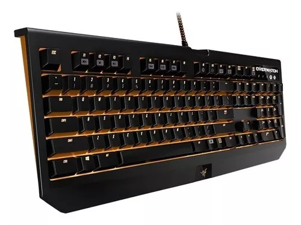

NotiGame
Portal de Noticias de Video Juegos
Silla Gamer Vertagear Sl2000 Edición Tsm

La silla para juegos Vertagear Racing Series S-Line SL2000 está diseñada para brindar un amplio rango de ajustes que brinda a los jugadores la mejor comodidad y soporte en cada posición de juego durante un período prolongado de tiempo.
Teclado Gamer Razer Blackwidow Chroma Overwatch, Mecánico
Diseñados específicamente para gamers, los interruptores mecánicos de Razer actúan a una distancia óptima, proporcionándole velocidad y capacidad de respuesta como nunca antes El Razer Overwatch BlackWidow Chroma cuenta con teclas retro iluminadas programables individualmente con 16.8 millones de opciones de color, todas configuradas fácilmente con Razer Synapse Cada héroe tiene su propio esquema de colores y tus dispositivos habilitados con Razer Chroma reaccionarán de acuerdo con el héroe que estás jugando
